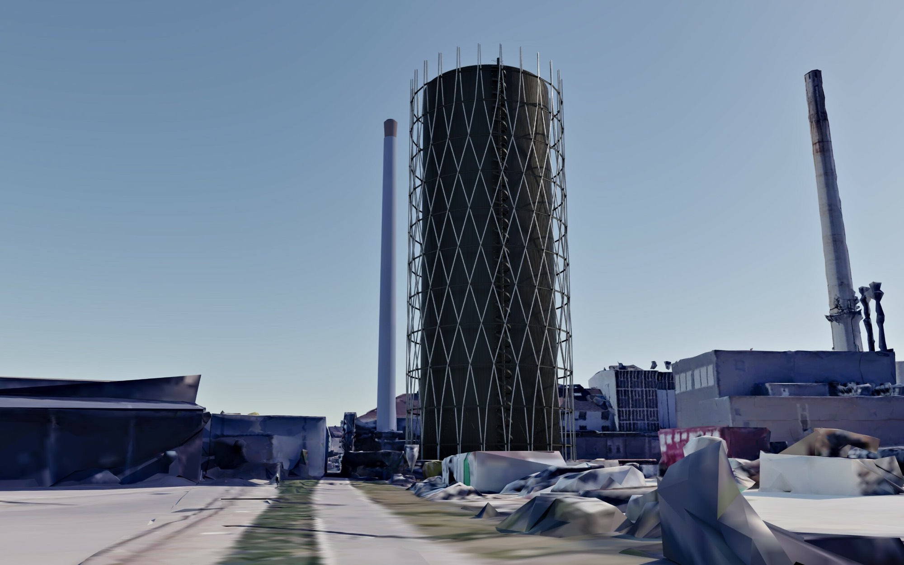
Fassadenvarianten Wärmespeicher HKW der Fernwärme Ulm
Der neue Wärmespeicher der FUG in der Ulmer Weststadt ist ein markantes und ca. 84m hohes Bauwerk. Der Bau des Speichers ist essenzieller Bestandteil der kommunalen Wärmewende. Der Wärmespeicher kann erhebliche Wärmemengen puffern und damit den Betrieb der benachbarten Biomasse – Heizkraftwerke effizienter gestalten und ist Voraussetzung für die Integration weiterer erneuerbarer Wärmeerzeugungstechnologien (wie bspw. Wärmepumpen). Durch die Höhe des Speichers kann das unter Druck stehende Fernwärmesystem effizienter betrieben werden.
Um dieses weithin sichtbare und markante Bauwerk städtebaulich verträglich in das Stadtbild integrieren zu können wurde in langen Abwägungs- und Abstimmungsprozessen eine Fassadengestaltung entschieden und baurechtlich gesichert.
Die entschiedene Fassade umhüllt das Bauwerk mit einer selbsttragenden und freistehenden Struktur aus Stahlprofilen, geistiger Pate sind die Gasometer der Jahrhundertwende. Im Zwischenraum Speicher / Fassade sind Wartungsarbeiten möglich, am oberen Abschluss des Bauwerks sorgt eine Akzentbeleuchtung für dezente Wahrnehmbarkeit. Es entsteht ein angemessen und im industriellen Geist gestalteter Baukörper, der die Silhouette der Stadt unaufgeregt um einen Orientierungspunkt ergänzt.
- Kategorie
- Arbeiten
- Standort
- Ulm
- Bauherr
- Fernwärme Ulm GmbH
Galerie
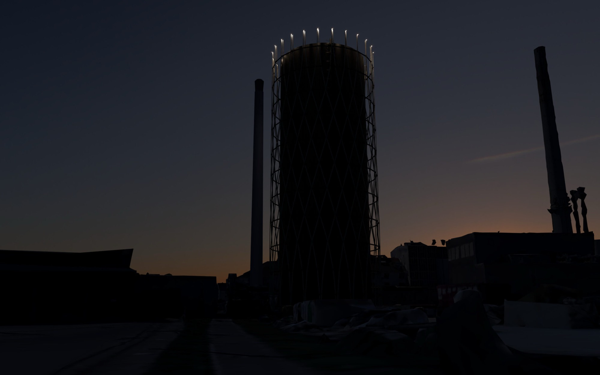
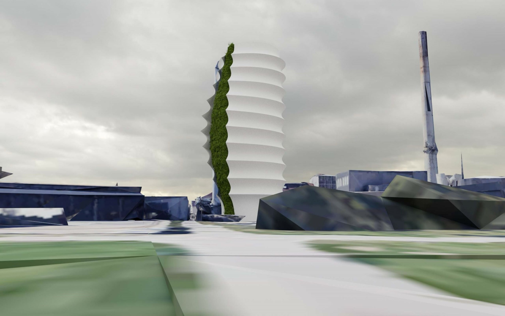
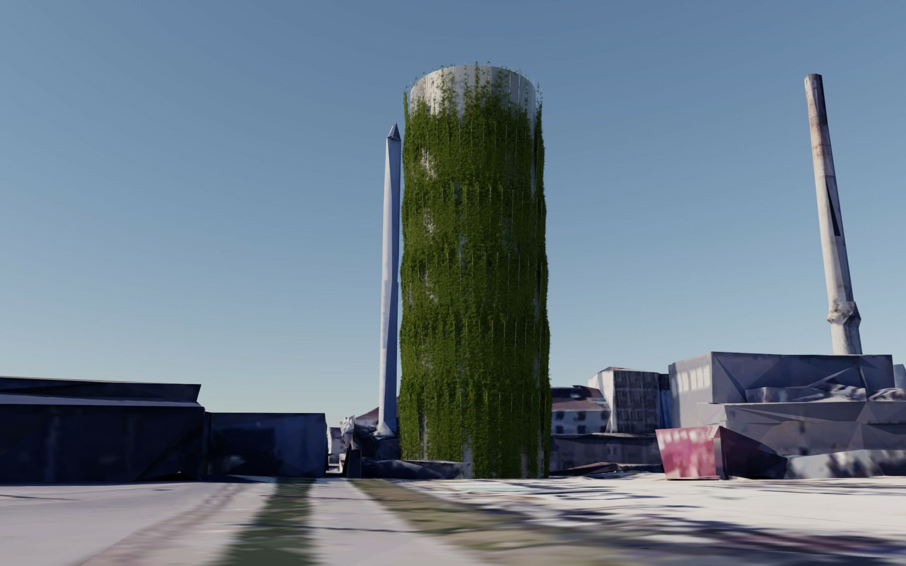
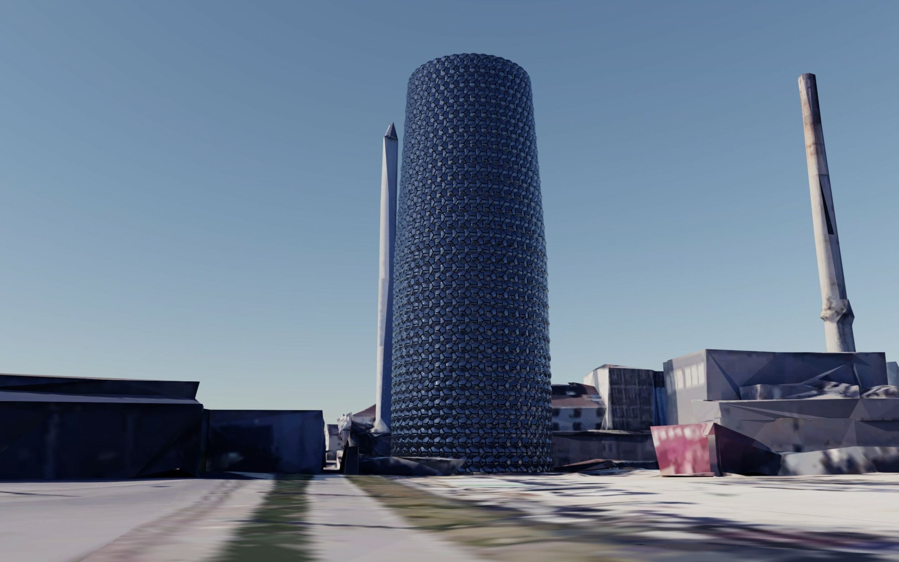
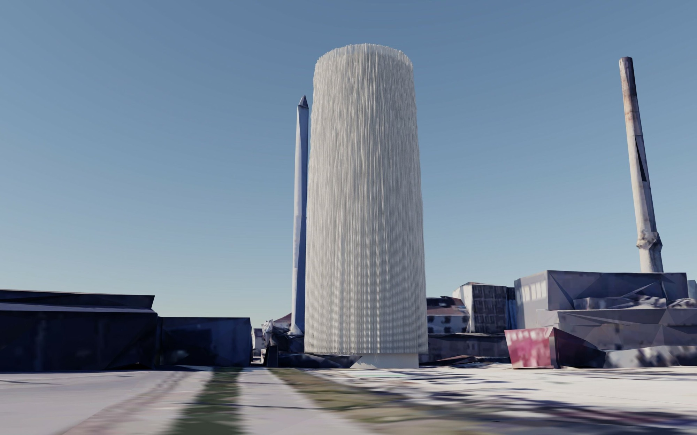
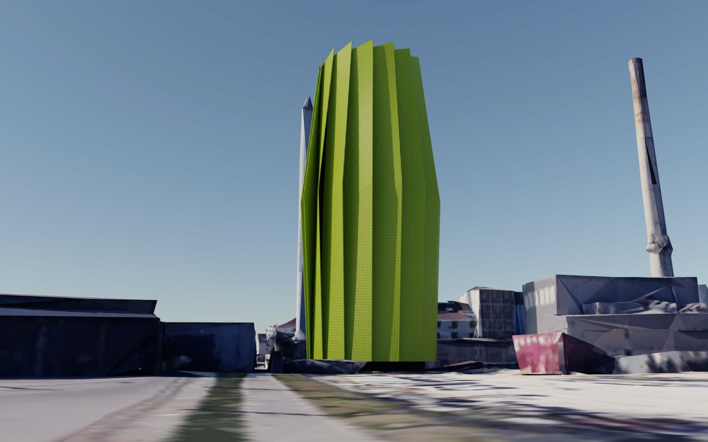
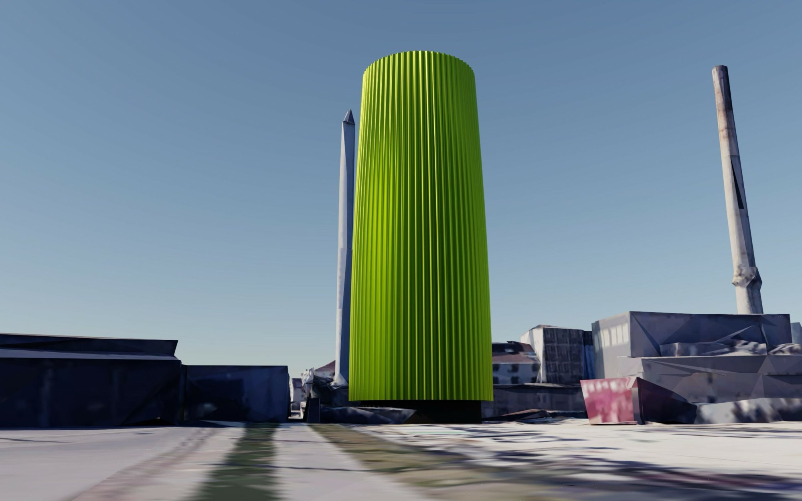
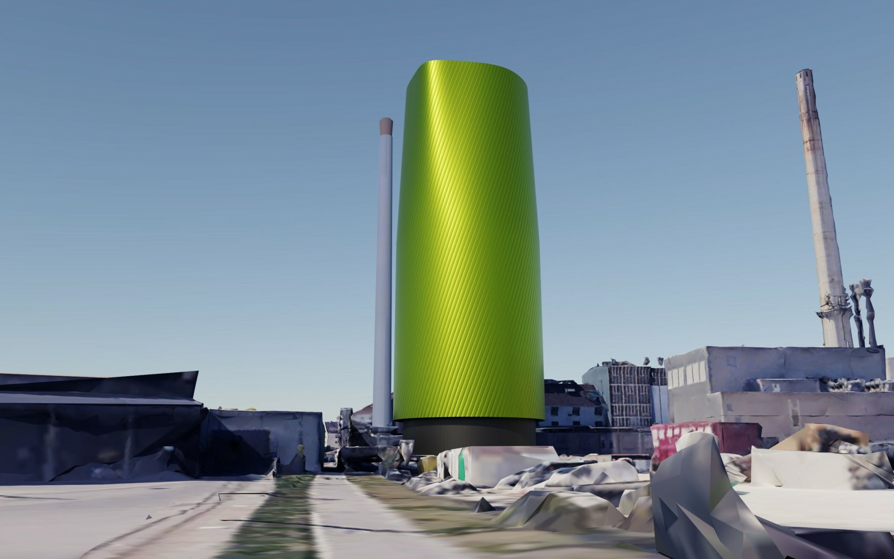
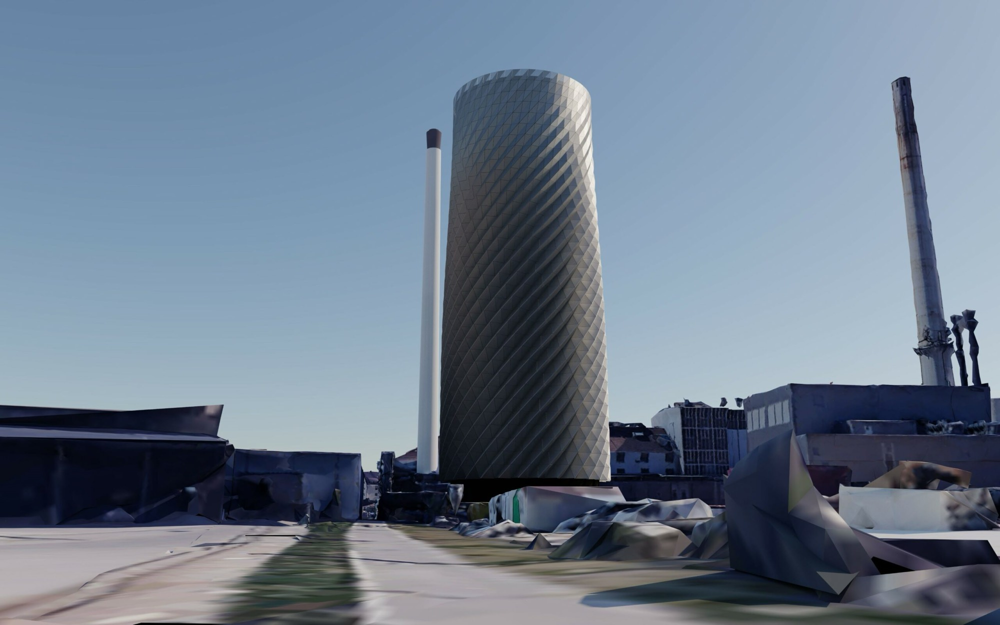
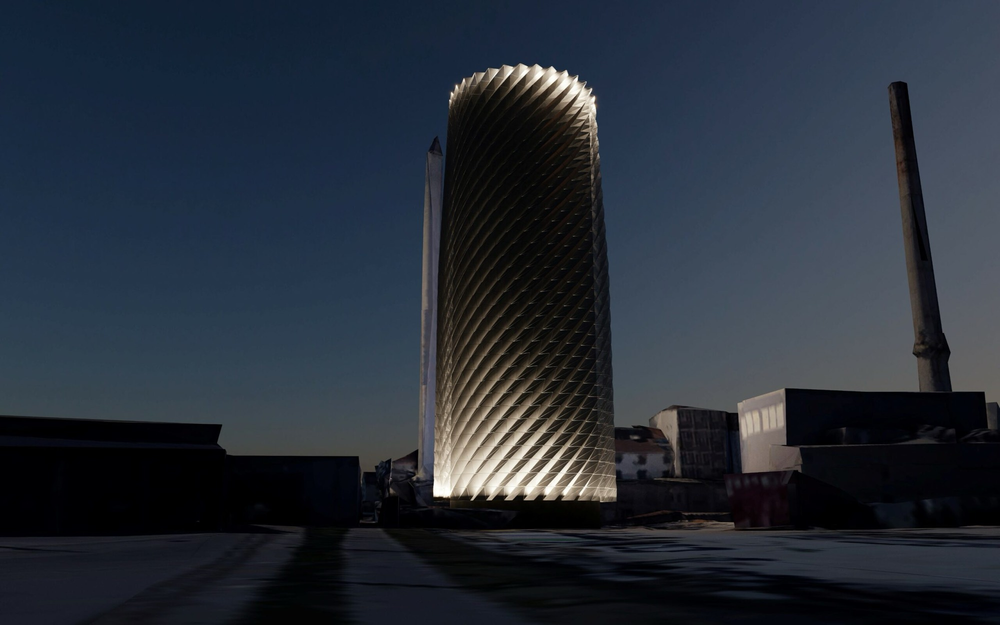
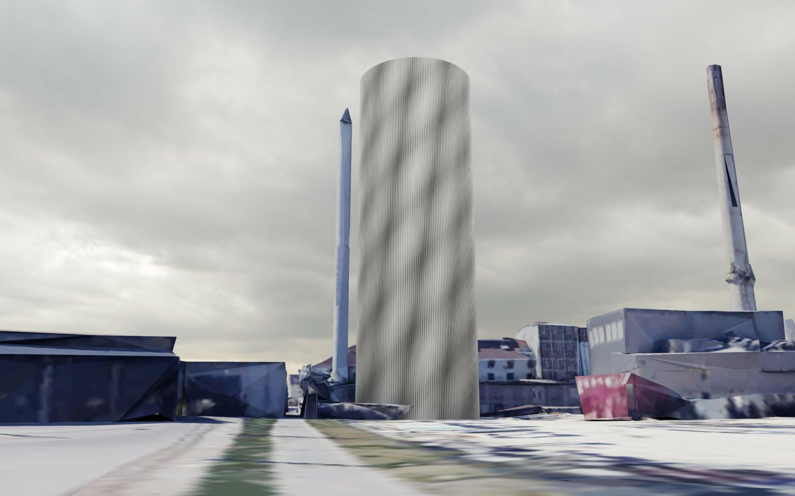
Umgebungsmodell © Google Maps
Varianten
Vor dieser Entscheidung standen in etwa 40 unterschiedliche Varianten, die nach intensiven Diskussionen abgewägt oder sogar ausgeschlossen werden mussten:
Fassadengrün
Eine Fassadenbegrünung ist einzig über bewässerte Pflanztröge herstellbar, ab Höhe ca. 20m ist das Wachstum wegen Umwelteinflüssen stark eingeschränkt. Wartung und Unterhalt stehen in keinem Verhältnis zur Gesamtinvestition. Die Langlebigkeit des Grüns ist nicht gegeben.
Photovoltaik
Großflächige Fotovoltaik kann nur an Teilen der Fassade sinnvoll Energie liefern, eine inhomogene Erscheinung wäre die Folge. Zu keinem der marktgängigen Systeme gibt es eine bauaufsichtliche Zulassung. Teure PV – Folien- oder Sondersysteme bedingen gewichtsbedingt eine Subkonstruktion und haben keine bauaufsichtliche Zulassung. Keine der untersuchten Varianten ist auch in Bezug zum Stromertrag wirtschaftlich darstellbar.
Holzkonstruktionen
Eine offene Raumstruktur in Holzbauweise bedingt erheblichen Wartungsaufwand, die Konstruktionen ergeben aus den notwendigen Dimensionen heraus ein eher grobes Bild.
Gefaltete Fassaden
Konventionelle Fassaden in z. B. Glas oder Metall sind sehr schwer und lösen bedingt durch Windlasten eine Subtragkonstruktion aus. Die Wirtschaftlichkeit ist nicht gegeben.
Projektdaten
- Nutzung
- Nutzung ergänzen
- Erbrachte Leistungen
- Objektplanung, Integralplanung — ergänzen
- Zertifikate
- Zertifizierung ergänzen
- Fotografie
- Fotograf:in ergänzen
- Veröffentlichungen
- Publikation, Medium, Jahr — ergänzenPublikation, Medium, Jahr — ergänzen
- Team
- Name ergänzenName ergänzenName ergänzen